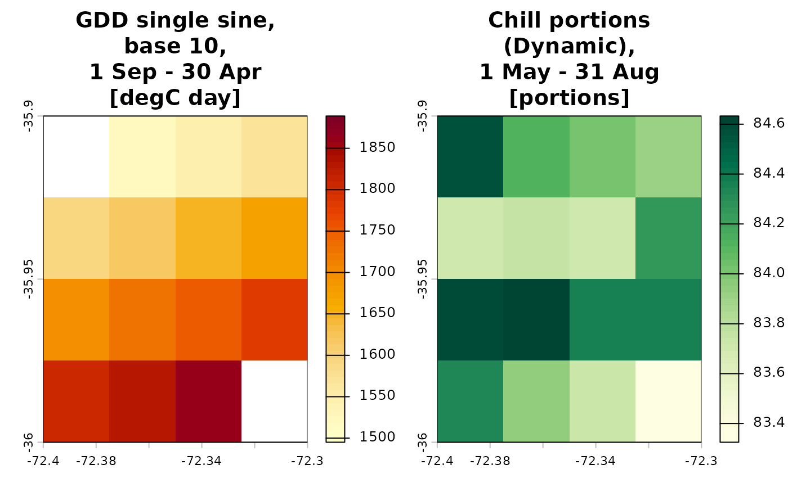
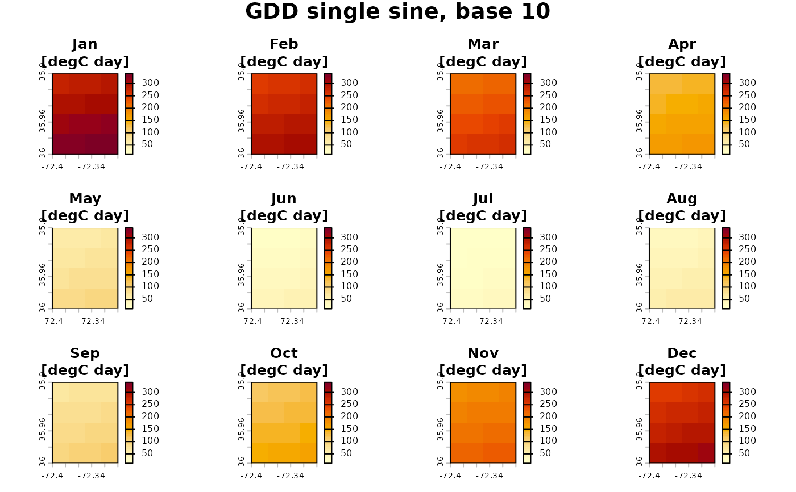
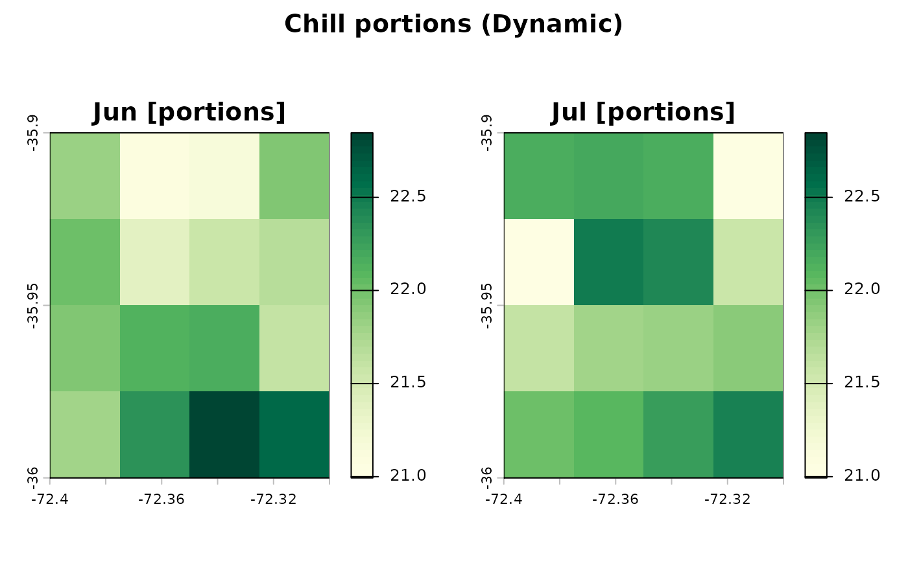
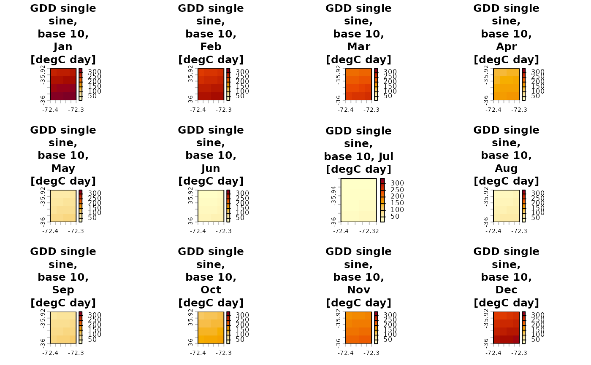

plot() draws the index maps returned by thermify_rast(), one panel per
index and layer, with titles, units and a colour palette per index family.
When a single index is shown month by month, each panel is titled with the
month and units and the index name is written once above the panels.
print() summarises the object.
Arguments
- x
An object returned by
thermify_rast().- variable
Indices to plot: full keys such as
"cp_dynamic"or"gdd_single_sine_b10", or families"gdd","ch","cu","cp".NULL(default) plots every index.- type
Layer to plot:
"season"(default),"annual","monthly"(the 12 monthly layers), or one or more month layers such as"m07". Utah units and chill portions have no"annual"layer, and their months outside the chill period hold no data; such layers are left out with a message.- nrow, ncol
Panel layout. When both are
NULLthe layout is chosen from the number of panels; when one is given the other is derived.- col
Colours for the maps: the name of a palette of
grDevices::hcl.colors()(which includes the ColorBrewer palettes, for example"Spectral","RdYlBu","viridis"), a vector of colours, or a function of the number of colours.NULL(default) uses multi-hue sequential palettes, light for low values:"YlOrRd"for degree-days,"YlGnBu"for chilling hours,"BuPu"for Utah units and"YlGn"for chill portions. Utah units with negative values (warm places) use the diverging"RdBu"centred on zero. Diverging palettes are oriented so that warm colours mean many degree-days and cold colours much chill, and are centred on zero with a symmetric scale when the values cross zero.- boundary
Optional
SpatVectordrawn over every panel, for examplecauquenes_boundary(). It is projected to the raster CRS when needed.- range
"variable"(default) uses a common colour scale for all panels of the same index, so that months are comparable;"panel"scales each panel on its own.- titles
Panel titles:
"auto"(default) writes the index and method, period and units in each panel, except when a single index is shown month by month, where panels show only the month and units and the index name is written once above them;"full"always writes the index and method in each panel;"short"writes only the period or month and the units (and the index name once above, when there is a single index).- ...
Further arguments passed to
terra::plot(). Titles that do not fit in the width of a panel are wrapped onto several lines, breaking preferably between method, period and units, and the top margin grows to make room for them;cex.mainchanges their size. Only in very small panels, where the lines would take too much of the height, is the title reduced. Amaingiven here (one title, or one per panel) replaces the automatic titles and is not wrapped.
Examples
r <- rast(nrows = 4, ncols = 4, nlyrs = 12,
xmin = -72.4, xmax = -72.3, ymin = -36, ymax = -35.9)
base_min <- c(11, 11, 9, 7, 5, 4, 3, 4, 5, 6, 8, 10)
base_max <- c(29, 29, 26, 22, 17, 14, 13, 15, 18, 21, 25, 28)
tmin <- setValues(r, outer(seq(-1, 1, length.out = 16), base_min, "+"))
tmax <- setValues(r, outer(seq(-1, 1, length.out = 16), base_max, "+"))
maps <- thermify_rast(tmin, tmax, output_dir = tempfile(),
temporal = "native", indices = c("gdd", "cp"),
gdd_methods = "single_sine", base = 10,
progress = FALSE)
maps
#> <thermify_rast> 2 indices, 4 x 4 cells, 16 valid
#> engine: native | interpolation: pchip_mp | reference year: 2023
#> gdd_single_sine_b10 [degC day] season annual m01 m02 m03 m04 m05 m06 m07 m08 m09 m10 m11 m12
#> cp_dynamic [portions] season m01 m02 m03 m04 m05 m06 m07 m08 m09 m10 m11 m12
#> files in: /tmp/RtmpJkoUjy/file1d3aec4f35e
plot(maps)

plot(maps, variable = "gdd", type = "monthly", nrow = 3, ncol = 4)

plot(maps, variable = "cp_dynamic", type = c("m06", "m07"))

plot(maps, variable = "gdd", type = "monthly", titles = "full")
